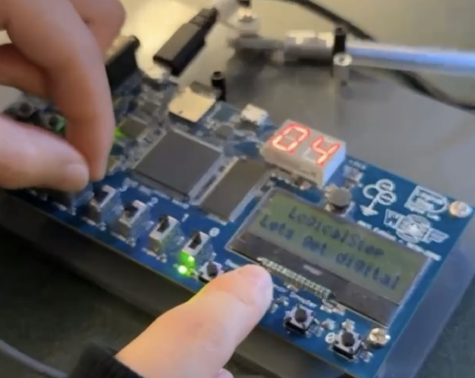
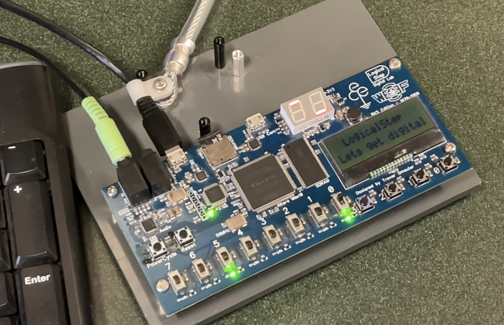

ECE124 FPGA Demonstration
Seven Segments

- It allow users to input sevensegment numbers by using switches
- By clicking the button, it will display the sum of the two input numbers
- Skills: binary conversion; binary adding with logic gates; use of multiplexer in VHDL
Energy Monitor
- the automatically increasing and decreasing numbers demonstrate the monitored room temperature
- the displayed numbers are compared in ordered to displayed correct LED light
- Skills: binary comperison; multiplexer; binary counter
Traffic Light

- demonstrate the behaviour of the traffic light for pedestrians
- Skills: use of Asychronous&Sychronous Sequential Circuit; Mealy/Moore Machine; State Diagram
Back to Home